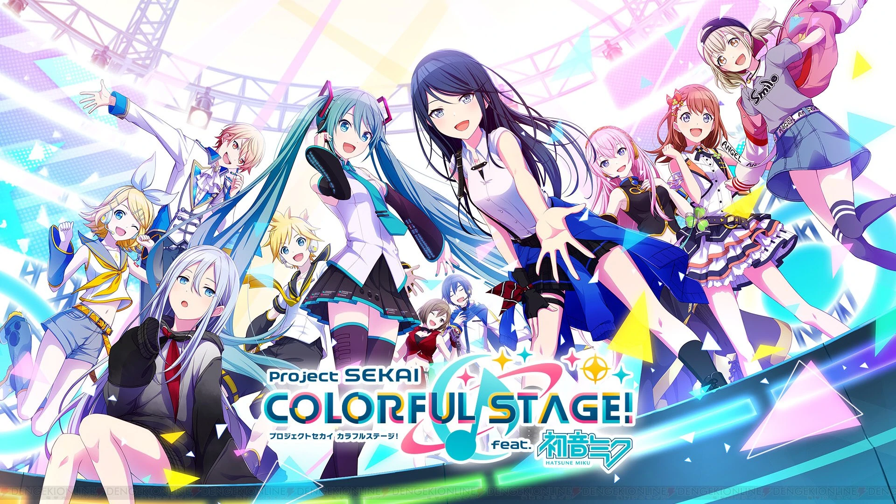
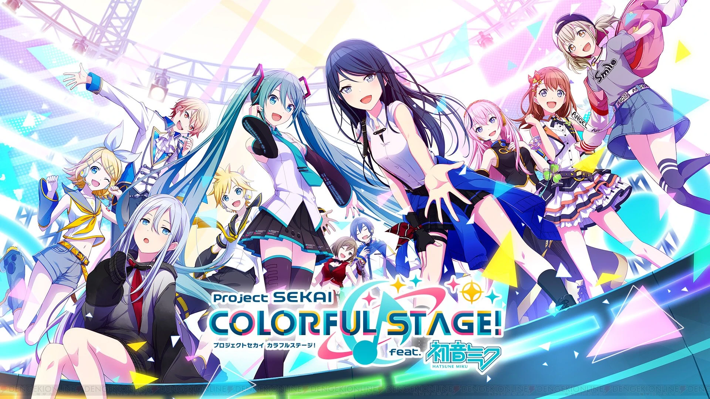

简介
啤酒烧烤很棒！啤酒烧烤是一款很新的音游，拥有众多vocaloid歌曲。可玩角色也是日系vocaloid全家桶。
游戏角色们
- 初音未来
- Rin
- 以及很多很多
我为什么喜欢啤酒烧烤？
怎么会有人不喜欢啤酒烧烤呢？谁会拒绝初音未来。 清爽的音游操作，而且所有的曲目都可以免费获取。 而且最重要的是，乐曲可以无限畅玩，即使没有体力也可以打谱子！
更多信息和链接：
啤酒烧烤很棒！啤酒烧烤是一款很新的音游，拥有众多vocaloid歌曲。可玩角色也是日系vocaloid全家桶。
怎么会有人不喜欢啤酒烧烤呢？谁会拒绝初音未来。 清爽的音游操作，而且所有的曲目都可以免费获取。 而且最重要的是，乐曲可以无限畅玩，即使没有体力也可以打谱子！
更多信息和链接：